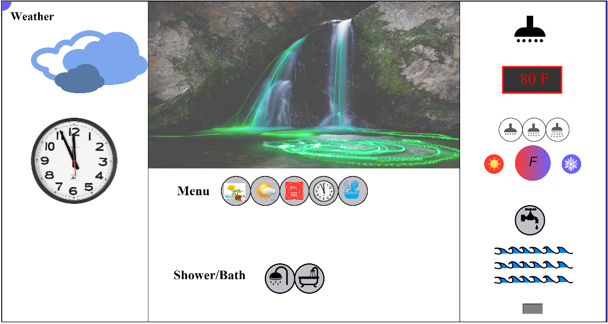

The above layout of the application is the loader state.
1. You can turn either take a shower or a bath, by selecting the respective icons at the bottom of the middle page.
2. When you click on the bath icon, the tap is enabled. I have shown this by increasing the opacity of the tap icon.
3. When you click on the shower icon, the three icons with rate of water flow from the shower is enabled.
4. When the tap is clicked, the level of water increases until the tub is full.
5. The temperature control is shown by the Gradients, here red and blue. When you click on the red(sunshine) icon, temperature is increased and when you click on the blue(snowflake) icon, the temperature is decreased.
6. This temperature is displayed just above the controls. You can switch between Celcius and Fahrenheit by clicking on the gradient icon.
7. The five menu icons represents, in sequential order from left to right, background imagery, the weather, lanugage options, clock and Safety for babies.
8. When you clicked on the Safety for babies icon, the icon is highlighted, and if the temperature was above 100 F or 40 C, the temperature is automatically brought down to 80 F and 25 C.
9. Background imagery can be changed, there are three choices in this implementation.
10. The weather controls are current and implements OpenWeather API for predicing the current weather. So, if its cloudy, a clouds image will be displayed. If its snowy, a snowfall image will be displayed.
11. In the language option, we have English and Polish, clicking on the icon will switch between the two languages.
The following is the fully functional status of the application.
